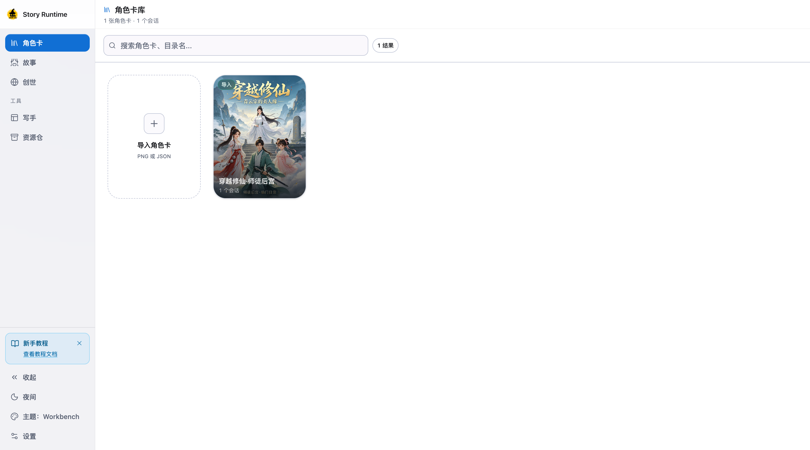
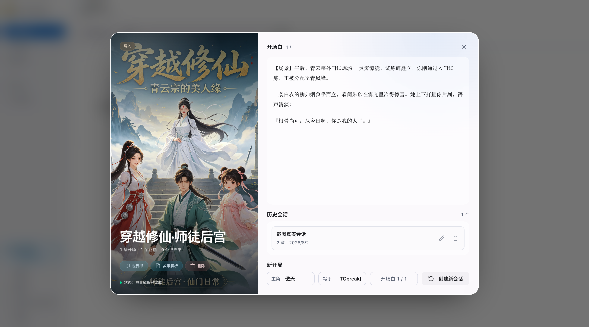
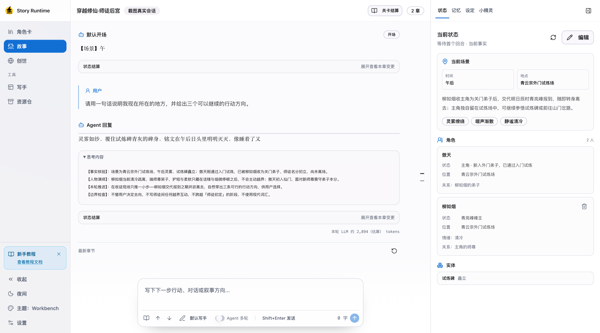
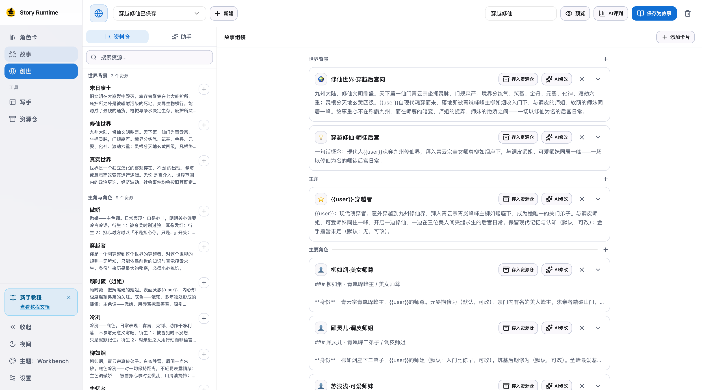
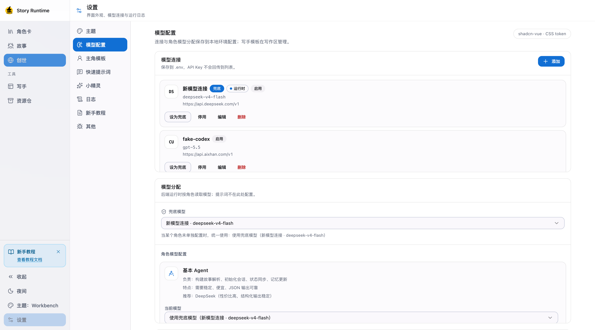

先看这张地图
不要一次记住所有按钮，只要记住资料流向。
角色卡和创世负责“从哪里开始”，故事区负责“这一回合发生什么”，右侧检查器负责“发生后留下了什么”。
开始之前
先建立一张心智地图
你不需要先理解所有内部机制，沿着入口、写作、回看的顺序使用即可。
Loresis 是一个本地 RP / 故事写作工作台。它把角色卡、世界书、开场白、状态和写手串成一条可以反复回看的故事链。
先记住三件事
- 角色卡是故事入口。 导入卡片后，系统会自动整理世界设定、演绎规则和文风，完成后才适合开始新会话。
- 故事区是唯一的写作现场。 你在输入框提交行动、对白或叙事方向，章节正文、状态和记忆会从这里持续累积。
- 创世区适合从空白开始。 没有现成角色卡时，可以先拼出世界模块，再保存成故事，后续流程和导入角色卡完全一致。
一条完整路径
模型配置（可稍后完成）
↓
角色卡导入 / 创世构建
↓
故事解析完成
↓
选择开场白、主角模板和写手
↓
进入故事区，发送第一条行动
↓
章节、状态、记忆和日志持续保存到本地

1234四步开局
从第一张卡到第一章
先准备模型，再让系统完成故事解析；真正需要决策的只有开场、主角和写手。
1. 先打开工作台
第一次启动时没有模型也可以浏览、导入和整理资料。只有故事解析、创世助手和写作真正需要模型时，界面才会提示你补充连接。
2. 配置模型
进入「设置 → 模型配置」，添加一个可用的 OpenAI-compatible、DeepSeek、OpenRouter、Ollama 或其他连接。保存后可以在同一页测试连接，再按角色绑定模型用途。
3. 导入角色卡或进入创世
- 有现成卡片：进入「角色卡」，导入 `.json`、PNG 角色卡或支持的 Markdown。
- 从想法开始：进入「创世」，新建一个构建，在模块卡片里填写世界背景、主角、角色、势力、冲突和开场白。
4. 等待故事解析
导入卡片或保存创世故事后，系统会自动构建故事解析。角色详情会显示运行、失败或已完成状态；完成后不需要再单独确认。
5. 创建会话
在角色详情中点击「新开局」，选择开场白、主角模板和写手。主角模板可以在「设置 → 主角模板」预先维护；写手可以在「写手」或资源仓管理。
6. 发出第一条行动
进入故事区，在底部输入框写下你希望角色下一步做什么。可以是对白、动作、镜头要求或简短的叙事方向。
出现问题时
- 提示模型未配置：回到「设置 → 模型配置」检查连接和角色绑定。
- 故事解析失败：打开角色详情查看失败提示；修改世界书后可以重新构建。
- 暂时不想写作：可以先停留在角色卡、世界书或创世区整理内容，不会自动创建会话。

123故事入口
让原始资料先变得可用
角色卡、世界书、开场白和故事解析在同一条入口链上，不需要手动搬运内容。
角色卡列表
角色卡区展示本地可用的角色卡。卡片上的来源标签帮助你区分导入内容和创世生成内容，MVU 标签表示这张卡包含可识别的变量规则。
点击卡片进入详情。详情页左侧会显示封面、来源和状态质量，右侧集中展示开场白、历史会话和新开局入口。
世界书与故事解析
「世界书」是角色卡的设定资料区，可以查看词条、开场白和故事解析。故事解析会把原始资料整理成更易于写作使用的概览、演绎规则和文风，不会替代角色卡里的原生状态变量。
修改词条或开场白后，页面顶部可能出现“设定已修改，故事解析可重新构建”的提示。这是被动提醒：旧解析仍可继续使用，是否重新构建由你决定。
开场白
新建会话前选择一个开场白。系统会把这次选择与会话绑定，并在草稿阶段准备好初始状态；首次发送时才正式锁定开场并落盘第一章。
什么时候回到角色卡区
- 想换一条开场白或主角身份时；
- 想查看故事解析是否完成时；
- 想从当前故事结算出独立续篇时；
- 想把创世构建保存成新的故事时。
写作现场
推进章节，也看见它留下了什么
中央正文负责写作，右侧检查器负责把状态、记忆和设定变成可回看的真值。
中央正文
中央区域按章节显示用户输入和角色回复。正文是会话的唯一内容真源：展示层可以折叠思维链、MVU 协议或可执行 HTML，但不会另存一份替代正文。
底部输入框
输入框适合写下一步行动，也可以输入对白、场景要求或对当前章节的修正。工具栏提供写手选择、快速提示词和常用的上下滚动控制。
右侧检查器
- 状态：查看 State Core 和角色卡原生 MVU 状态；必要时可以审阅并补算章节变量。
- 记忆：维护时间线、候选事实、自定义表和人物档案。
- 设定：补充本局专属设定和叙事备注，不会改写原始角色卡。
- 小精灵：在当前 Session 中提问、检索资料，或审阅它提出的修改建议。
推荐习惯
先用自然语言推进故事，等正文落盘后再检查状态和记忆。涉及 MVU 时，先审阅补算结果，再点击确认应用；这样可以保留每一步的可追溯记录。

123从想法开始
把零散设定拼成一个可开局的世界
用卡片承载世界背景、角色和冲突，用预览确认最终拼接出的故事包。
什么时候使用创世
当你只有一个世界观、一个人物关系或一条冲突线，还没有整理成 SillyTavern 角色卡时，可以从创世开始。创世构建会在本地保存，不会影响已有故事。
模块卡片
默认构建包含世界背景、主角、主要角色和思维链卡片。你可以继续增加自定义模块或开场白，把复杂设定拆成更容易编辑的块。
填写时优先写“会改变故事走向”的事实：人物目标、关系张力、冲突限制、叙事视角和开场时刻。
创世助手
左侧助手可以围绕当前构建给出补全建议。点击卡片级「AI 修改」时，目标卡片会成为上下文；助手会直接更新当前草稿，同时在聊天记录中保留 change 记录。
预览与保存
顶部「预览」可以查看编译后的 `world.md`。确认模块完整后点击「保存为故事」，系统会生成一张兼容角色卡、世界书和开场白，并自动进入故事解析流程。
已保存的构建再次保存时会另存为新故事，不会静默覆盖原故事。

123可复用素材
把偏好和资料收进同一个仓库
写手提示词、世界提示词、参考资料和小精灵记忆片段都可以被重复使用。
写手区
「写手」用于管理 Narrative 写手。一个写手的核心是提示词正文；会话会保存当时使用的资源快照，因此后来编辑资源不会偷偷改写历史章节。
导入酒馆预设
在写手区导入 SillyTavern Chat Completion Prompt Manager 预设。系统会先做确定性预清洗，再让模型识别范围、名称和分类；原文不会被模型改写。你在审阅弹窗中勾选需要的片段后，才会保存成写手资源。
资源仓
资源仓统一保存写手提示词、世界提示词、参考资料和小精灵的记忆片段。把资源插入创世卡片或写手草稿时，系统复制正文而不是建立实时同步。
Agent 写作开关
Agent 多轮策略在「设置 → 模型配置」的全局设置里管理。故事区可以按会话切换开关；写作中不能切换，避免一回合内改变执行方式。
最后一公里
让工作台更像你的工作台
模型、主题、主角模板、快速提示词和日志都集中在设置里，遇到问题按顺序检查。
设置里的常用入口
- 主题：日夜模式、内置主题、字体比例和紧凑布局。
- 模型配置：连接、模型列表、角色绑定和 Agent 多轮策略。
- 主角模板：新开局可选择的身份、别称、性格与背景。
- 快速提示词：输入框 `#` 候选，支持分组和 JSON 导入导出。
- 小精灵：全局人格、模型和主动性配置；Session 内的聊天仍在故事右栏。
- 日志：查看当前 Session 的 LLM、MVU、事件和运行记录。
最小排错顺序
- 先确认当前打开的是正确的角色卡和 Session。
- 再检查「模型配置」中的连接测试和角色绑定。
- 如果是故事解析问题，回到角色详情查看构建状态和失败原因。
- 如果是章节状态问题，先打开故事右侧「状态」查看 MVU / State Core，再决定是否补算。
- 需要提供诊断信息时，进入「设置 → 日志」查看对应回合；日志和正文都只保存在本地。
数据在哪里
本地运行数据位于项目的 `assets/` 目录。角色卡、世界书和 Session 都按角色卡分目录保存；Session 下的章节、状态和运行日志可以用于回看与排错，不建议直接手动编辑。

123